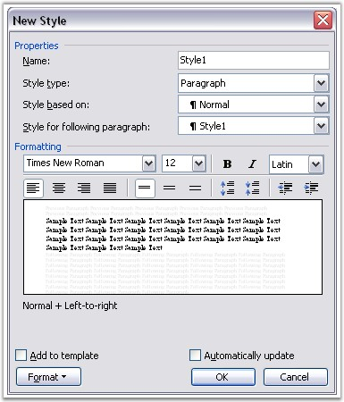

WParagraphStyle class represents paragraph style in the Word document. Paragraph style is a pattern of paragraph formatting. You can also apply custom paragraph styles in MS Word.

Figure 71: Paragraph Styles
WParagraphStyle class has three properties.
· ParagraphFormat: defines formatting for the paragraph to which the style is applied to
· BaseStyle: defines base paragraph style
· StyleType: returns type of style (StyleType.ParagraphStyle)
You can add your own paragraph styles to the document. Collection of DocIO paragraph styles is accessible through WordDocument.Styles property. You can apply one of the built-in Word paragraph styles by using the WParagraph.ApplyStyle method.
Also, you can use the ApplyBaseStyle method to apply the base style for the current paragraph style.
Class Hierarchy
Style
|
WParagraphStyle
Public Constructor
|
Name |
Description |
|
WParagraphStyle.WParagraphStyle (IWordDocument) |
Initializes a new instance of the WParagraphStyle class. |
Public Properties
|
Name |
Description |
|
BaseStyle |
Gets a base style of paragraph. |
|
ParagraphFormat |
Gets formatting of paragraph. |
|
StyleType |
Gets the type of the style. |
Public Methods
|
Name |
Description |
|
ApplyBaseStyle |
Applies base style for current style. |
|
Clone |
Clones itself. |
The following example illustrates how to create user-defined paragraph styles by using DocIO.
|
[C#]
IWordDocument doc = new WordDocument();
IWParagraphStyle style = (IWParagraphStyle)doc.AddParagraphStyle("Normal");
style = (IWParagraphStyle)doc.AddParagraphStyle("UserStyle_Heading1"); style.CharacterFormat.Bold = true; style.CharacterFormat.FontName = "Verdana"; style.CharacterFormat.FontSize = 25;
style = (IWParagraphStyle)doc.AddParagraphStyle("UserStyle_Heading2"); style.CharacterFormat.Italic = true; style.CharacterFormat.FontName = "Verdana"; style.CharacterFormat.FontSize = 20;
style = (IWParagraphStyle)doc.AddParagraphStyle("UserStyle_Heading3"); style.CharacterFormat.Bold = true; style.CharacterFormat.FontName = "Times New Roman"; style.CharacterFormat.FontSize = 20; style.CharacterFormat.UnderlineStyle = UnderlineStyle.Single;
IWSection section = doc.AddSection();
for (int i = 0; i < doc.Styles.Count; i++) { style = (IWParagraphStyle)doc.Styles[i]; IWParagraph paragraph = section.AddParagraph(); paragraph.ApplyStyle(style.Name); paragraph.AppendText("[ Style Applied ]: "); paragraph.AppendText(style.Name); } section.AddParagraph(); doc.Save("UserStyle.doc"); |
|
[VB.NET]
Dim doc As IWordDocument = New WordDocument()
Dim style As IWParagraphStyle = CType(doc.AddParagraphStyle("Normal"), IWParagraphStyle) Dim style = CType(doc.AddParagraphStyle("UserStyle_Heading1"), IWParagraphStyle) style.CharacterFormat.Bold = True style.CharacterFormat.FontName = "Verdana" style.CharacterFormat.FontSize = 25
style = CType(doc.AddParagraphStyle("UserStyle_Heading2"), IWParagraphStyle) style.CharacterFormat.Italic = True style.CharacterFormat.FontName = "Verdana" style.CharacterFormat.FontSize = 20
style = CType(doc.AddParagraphStyle("UserStyle_Heading3"), IWParagraphStyle) style.CharacterFormat.Bold = True style.CharacterFormat.FontName = "Times New Roman" style.CharacterFormat.FontSize = 20 style.CharacterFormat.UnderlineStyle = UnderlineStyle.Single
Dim section As IWSection = doc.AddSection()
Dim i As Integer = 0
Do While i < doc.Styles.Count style = CType(doc.Styles(i), IWParagraphStyle) Dim paragraph As IWParagraph = section.AddParagraph() paragraph.ApplyStyle(style.Name) paragraph.AppendText("[ Style Applied ]: ") paragraph.AppendText(style.Name) i += 1 Loop section.AddParagraph() doc.Save("UserStyle.doc") |
The following code illustrates how to apply built-in paragraph styles to the Word document.
|
[C#]
IWordDocument doc = new WordDocument(); doc.EnsureMinimal();
doc.LastParagraph.AppendText("Heading 1"); doc.LastParagraph.ApplyStyle(BuiltinStyle.Heading1);
doc.Save("BuiltinStyle.doc"); |
|
[VB.NET]
Dim doc As IWordDocument = New WordDocument()
doc.EnsureMinimal()
doc.LastParagraph.AppendText("Heading 1") doc.LastParagraph.ApplyStyle(BuiltinStyle.Heading1)
doc.Save("BuiltinStyle.doc") |